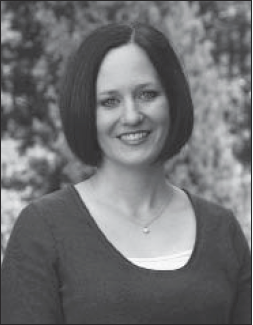

|  |
Jessica LaGrone is an acclaimed pastor, teacher, speaker, and writer whose engaging communication style endears her to her audiences. Currently she is Pastor of Worship at The Woodlands United Methodist Church in The Woodlands, Texas, a church with over 8,000 members. In this position she serves as worship architect, planning and developing four of the church’s seven weekly worship experiences and working with contractors whose talent in music, media, and preaching build worship services that shine for the glory of God. Her other projects include leading the development of The Woodland UMC’s online church initiative and acting as the church’s pastoral liaison and chaplain to the Asbury Theological Seminary program. Her popular blog “Reverend Mother” (www.jessicalagrone.com) encompasses her dual roles of pastor and mom. She writes, “This is a blog about having a foot in two worlds, and being imperfect, inadequate, and available to God in both at the same time.” Jessica enjoys speaking at retreats and events at churches throughout the United States. She and her husband, Jim, have two young children, Drew and Kate.